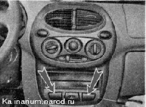
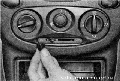
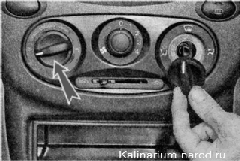
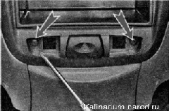
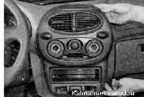
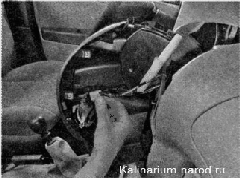

Накладка консоли панели приборов - снятие и установкаСнятие 1. Подготавливаем автомобиль к выполнению работы и отсоединяем клемму от отрицательного вывода аккумуляторной батареи. Если на автомобиле установлена магнитола (или другое головное устройство аудиосистемы), извлекаем ее в соответствии с инструкцией по установке. 2. Тонкой шлицевой отверткой аккуратно поддеваем и извлекаем две заглушки накладки. Если вместо одной из заглушек установлен выключатель, откройте крышку пепельницы. Отверните четыре самореза крепления пепельницы и снимите ее. Либо извлеките ящик для мелких вещей, установленный на месте магнитолы. Через открывшийся проем отсоедините колодку проводов от выключателя и вытолкните выключатель из панели наружу. 3. Снимаем рукоятку рычага управления заслонкой рециркуляции воздуха. 
4. Снимаем ручки управления воздушными потоками и регулятора температуры воздуха. 5. Крестовой отверткой отворачиваем два самореза крепления накладки консоли панели приборов.  6. Отводим накладку от панели приборов на длину проводов. 
7. Отсоединяем колодки проводов от выключателей и ламп подсветки панели. 
8. При необходимости извлекаем из отверстий накладки выключатели. Установка Устанавливаем накладку в обратной последовательности. |